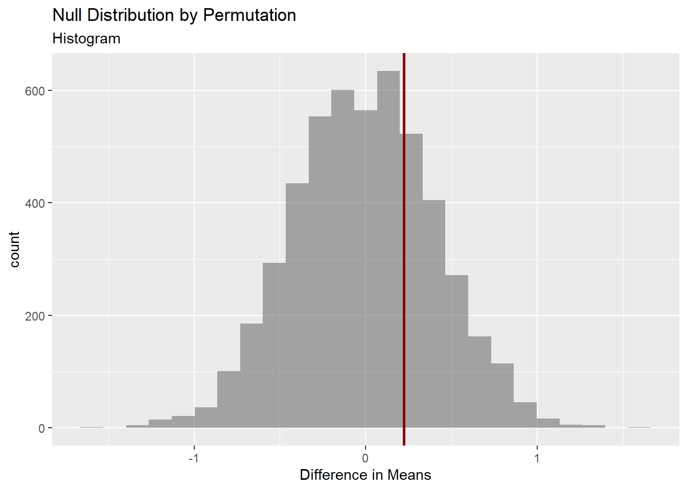

── Attaching core tidyverse packages ──────────────────────── tidyverse 2.0.0 ──
✔ dplyr 1.1.4 ✔ readr 2.1.5
✔ forcats 1.0.0 ✔ stringr 1.5.1
✔ ggplot2 3.5.1 ✔ tibble 3.2.1
✔ lubridate 1.9.3 ✔ tidyr 1.3.1
✔ purrr 1.0.2
── Conflicts ────────────────────────────────────────── tidyverse_conflicts() ──
✖ dplyr::filter() masks stats::filter()
✖ dplyr::lag() masks stats::lag()
ℹ Use the conflicted package (<http://conflicted.r-lib.org/>) to force all conflicts to become errors
library(mosaic)
Registered S3 method overwritten by 'mosaic':
method from
fortify.SpatialPolygonsDataFrame ggplot2
The 'mosaic' package masks several functions from core packages in order to add
additional features. The original behavior of these functions should not be affected by this.
Attaching package: 'mosaic'
The following object is masked from 'package:Matrix':
mean
The following objects are masked from 'package:dplyr':
count, do, tally
The following object is masked from 'package:purrr':
cross
The following object is masked from 'package:ggplot2':
stat
The following objects are masked from 'package:stats':
binom.test, cor, cor.test, cov, fivenum, IQR, median, prop.test,
quantile, sd, t.test, var
The following objects are masked from 'package:base':
max, mean, min, prod, range, sample, sum
library(skimr)
Attaching package: 'skimr'
The following object is masked from 'package:mosaic':
n_missing
library(ggformula)library(crosstable)
Attaching package: 'crosstable'
The following object is masked from 'package:purrr':
compact
library(infer)
Attaching package: 'infer'
The following objects are masked from 'package:mosaic':
prop_test, t_test
Goal of the Experiment: The purpose of this research experiment is to understand the nostalgic value of certain childhood cartoons among young adults who have “aged out” of the target demographic. By evaluating three popular cartoons (Doraemon, Chhota Bheem, and Dragon Tales), the experiment aims to identify which show holds the most cherished place in the hearts of these individuals, as reflected by their ratings on a scale of 10.
Methodology
Sampling: The population consists of all people between the ages of 19-22. The sample population is a randomly chosen group of students in a college campus ensuring a hopefully balanced set of participants that is a true representation of the population. Each participant was asked to rate one of the cartoon in a scale of 10. Every participant was not asked to rate all 3 to remove any bias regarding each other- so that their opinion is not clouded by their opinion of another- which would make them linked variables.
Method Followed- To ensure a lack of bias, a coin was tossed to even determine of data would be collected from a person or not. This lead to random sampling ensure diversity in age and socioeconomic background.
Sample Size: We had a total of 90 participants 30 Chhota Bheem and 30 Doraemon and 30 Dragon Tales.
Why could knowing this be useful?
Companies in media and entertainment can use the data to gauge the staying power of their content, particularly if they are considering reboots, merchandise, or spin-offs aimed at older audiences
The experiment can offer insights into how nostalgia shapes media preferences and emotional connections to shows viewed in childhood, contributing to studies in psychology and media studies.
I noticed that there is only a column called top_counts in the variables declared as factors, i can’t believe I’m just seeing this now!
There are 30 entries of each cartoon and 45 for each gender. Was the data collection done in way where there are 15 entries from each gender for every cartoon? If so it could have been with the intent of eliminating gender bias in the analysis of the data. Regardless, it gives me another factor! I can try and find out which gender group remembers cartoon more fondly if i do have to time for it.
My guess was right! There are 15 entries each from Males and Females for each Cartoon which removes gender bias from our analysis of this data!
Distribution of all ratings!
cartoons_modified %>%gf_histogram(~Rating)
Observations:
The lowest rating given is 1, showing that at least one participant rated a cartoon at the lowest end of the scale.
p50 from skim is 7, which suggests that The median rating is 7, meaning that half of the ratings are 7 or lower. This suggests a central tendency toward higher ratings.
There is a high concentration of ratings around 6 and 8!
Ratings faceted by Cartoons
gf_histogram(~Rating, fill =~Cartoon, data = cartoons_modified, alpha=0.5) %>%gf_labs(title ="Ratings faceted by Cartoons", caption ="ggformula")
cartoons_modified %>%gf_histogram(~Rating|Cartoon, fill =~Cartoon, color ="black", alpha =0.3) %>%gf_labs(title ="Ratings faceted by Cartoons",caption ="ggformula" ) %>%gf_theme(theme(axis.text.x =element_text(angle =45,hjust =1 ) ))
cartoons_modified %>%gf_density(~ Rating,fill =~ Cartoon,alpha =0.5,title ="Rating Densities by different cartoons",subtitle ="Chota Bheem vs Doraemon us Dragon Tales" )
Observations:
The ratings of Chhota Bheem had a bimodial distribution clustered around 6 and 8 approximately.
From what i observe, Doraemon and Dragon Tale Ratings have a normal distribution.
Among the 3, i think Chhota Bheem is th least “liked” among people- It has the lowest distribution of high values, but it has the highest for approximately middle of the distribution.
Dragon Tales’ distribution peaks at approximately 7, while Doremon’s peaks at 8.5.
When it comes to the lows, surprisingly, it’s Chota Bheem that has the least lows while comparatively Doremon has the most. Doremon has the highest highs and the highest lows but the number of lows are very less comapred to the number of highs.
Crosstables:
I can get a better idea of the accuracy of my hunches by doing crosstables to better understand my data!
crosstable(Rating ~ Cartoon, data = cartoons_modified) %>% crosstable::as_flextable()
label
variable
Cartoon
Chota Bheem
Doraemon
Dragon Tales
Rating
Min / Max
3.0 / 10.0
1.0 / 10.0
1.0 / 10.0
Med [IQR]
6.4 [6.0;8.0]
8.0 [6.0;9.0]
7.0 [6.1;8.4]
Mean (std)
6.7 (1.5)
7.2 (2.3)
7.3 (2.0)
N (NA)
30 (0)
30 (0)
30 (0)
Visualization of the median and IQR
cartoons_modified %>%gf_boxplot(Cartoon ~ Rating, fill =~Cartoon, alpha=0.5) %>%gf_labs(title ="Box plot of Ratings by Cartoon")
Observations:
I think i was right in my inferences on the distribution of data!
Chaota Bheem has the least mean (6.4) and median(6.7) with a narrow IQR range.
While Doraemon has a higher median than Dragon tales, it has a slightly lower mean- this aligns with my analysis that while Doraemon has the highest number of highs, it also has the highest number of lows- making it’s median higher and mean lower. Supporting this, while it’s IQR range starts right along with Dragon Tales’, It’s whiskers are much longer to the left(lower side) and the IQR range lasts longer for Doraemon. The distribution of values to the left of the median of Doraemon is more spread out than the other 2, and more concentrated to the right compared to the others.
Basically, Doraemon and Dragon Tales have higher mean and median ratings than Chhota Bheem, suggesting they are more positively regarded by participants overall.
Chhota Bheem shows less variability and is clustered around a lower average rating, suggesting a mixed appeal among it’s audience and an “it’s not too great but it’s not bad either” kind of opinion i think.
Forming my Hypothesis:
Null Hypothesis: There is no difference in the average ratings given by young adults to the three cartoons.
Alternative Hypothesis: Chota Bheem is the least cherished by young adults compared to the the other 2.
I cant really say for the most cherished one since I don’t think there is much a difference in the young adults view Dragon Tales and Doremon
I think my alternate hypothesis is true among the two. Let’s see if my data says the same!
Statistical Analysis:
ANOVA:
Assumptions:
1. Data (and standard errors) are normally distributed.
2. Variances in rating between all groups (Doraemon, Chota Bheem, and Dragon Tale) are equal.
3. Observations are independent.
ANOVA is used to test hypotheses related to differences in the mean ratings among the three cartoons (Doraemon, Chota Bheem, and Dragon Tales).
cartoons_anova <-aov(Rating ~ Cartoon, data = cartoons_modified) cartoons_supernova <- supernova::pairwise(cartoons_anova,correction ="Bonferroni",alpha =0.05, # 95% CI calculationvar_equal =TRUE, plot =TRUE)
Observations:
The confidence interval for the difference between all the pairs of cartoons include 0 which indicates that we cannot conclude to state there is a significant difference in rating between the 3 cartoons. We cannot reject the null hypothesis.
Evaluating the extent of effect!
cartoons_supernova
── Pairwise t-tests with Bonferroni correction ─────────────────────────────────
cartoons_modified %>%gf_density( ~ Rating,fill =~ Cartoon,alpha =0.5,title ="Rating of Cartoon vs normal distribution") %>%gf_facet_grid(~ Cartoon) %>%gf_fitdistr(dist ="dnorm")
Observations:
Doraemon and Dragon Tales’ ratings are normally distributed with a p value <0.05 and a w > 0.9.
While Chota Bheem’s is more confusing, while i has a large w value- 0.93, it’s p-value is not less than 0.05- it’s 0.18. I think it means that this distribution is mostly normal, but there is not enough evidence to confirm it- it could have happen by chance.
While there is not too much of a difference between Chhota Bheem and Dragon Tales- There is a larger difference in varince for Doremon comapritively.
Does the fligner test say the same?
null hypothesis: he variances between the groups are similar.
fligner.test(Rating ~ Cartoon, data = cartoons_modified)%>% broom::tidy()
# A tibble: 1 × 4
statistic p.value parameter method
<dbl> <dbl> <dbl> <chr>
1 1.81 0.404 2 Fligner-Killeen test of homogeneity of variances
Since the p-value (0.40) is greater than 0.05, I do not have sufficient evidence to reject the null hypothesis. This means that the variances across the groups (by Cartoons) are not significantly different, so we can reasonably assume homogeneity of variances.
Considering we could not prove the presence of a normal distribution when it comes to Chota Bheem’s distribution, it proves our assumption required for ANOVA to be accurate false. Therefore, we will conduct a permutation test to reach a conclusion!
ANOVA using Permutation Tests
Permutation tests are distribution-free, meaning they don’t rely on specific assumptions about the underlying data distribution, including normality.
Response: Rating (numeric)
Explanatory: Cartoon (factor)
Null Hypothesis: independence
# A tibble: 1 × 1
stat
<dbl>
1 0.919
The observed variability in scores- f value is a small number: 0.9189246. Therefore, the between-group variance is not much larger than the within-group variance for my sample data.
The null distribution of f-values obtained by permutation
Since your observed F statistic (0.91) is at the lower end of this distribution, this suggests that it’s quite common to get an F value around 0.91 (or even higher) due to random chance. Therefore, we don’t have any evidence of to state that there is a difference in people’s reaction to all 3 cartoons.
Conclusion:
There is no statistically significant different between the opinion scores for the 3 cartoon! The sample population says they are all the similar when it comes to likability which I assume is the reality of the population as well!
ANALYSIS OF OPNION SCORES OF CARTOONS BASED ON GENDER:
I’m not really sure i can do it for all this because the ratings taken given for 3 different cartoons to answer the question of people of which gender cherish cartoons more than the other. I’m going to go ahead and do it tho, because my statistical analysis based on cartoons concluded saying that there is no significant difference in opinion scores between the 3. Therefore, I assume i can generalise these scores to apply for all cartoons.
Descriptive Analysis:
Distribution of all ratings faceted by gender.
gf_histogram(~Rating, fill =~Gender, data = cartoons_modified, alpha=0.5) %>%gf_labs(title ="Ratings faceted by Gender", caption ="ggformula")
cartoons_modified %>%gf_histogram(~Rating|Gender, fill =~Gender, color ="black", alpha =0.3) %>%gf_labs(title ="Ratings faceted by Gender",caption ="ggformula" ) %>%gf_theme(theme(axis.text.x =element_text(angle =45,hjust =1 ) ))
cartoons_modified %>%gf_density(~ Rating,fill =~ Gender,alpha =0.5,title ="Rating Densities by Gender",subtitle ="Male vs Female" )
Observations:
Both of them are left skewed. At first glace, there does not seem to be much a difference in the 2 distributions.
The male distribution peaks at approximately 7. It has a number of a score of 10 compared to females and also a higher number of 1 score compared to females.
The female distribution peaks at 8 and there are lesser number of lower scores in it compared to the male distribution.
When it comes to the average mean, i think females will have a higher mean than males.
Crosstables:
Does the summation of the data support my hunch?
crosstable(Rating ~ Gender, data = cartoons_modified) %>% crosstable::as_flextable()
label
variable
Gender
Male
Female
Rating
Min / Max
1.0 / 10.0
3.0 / 10.0
Med [IQR]
7.0 [6.0;8.5]
7.0 [6.0;8.0]
Mean (std)
7.0 (2.2)
7.2 (1.6)
N (NA)
45 (0)
45 (0)
Visualizing the median and IQR ranges.
cartoons_modified %>%gf_boxplot(Gender ~ Rating, fill =~Gender, alpha=0.5) %>%gf_labs(title ="Box plot of Rating filled with Gender")
Observations:
Both males and females gave an average (mean) rating close to 7, with females slightly higher at 7.2 compared to 7.0 for males.
The median rating for both groups is also 7, suggesting that 7 is a common rating across genders. This similarity in mean and median ratings implies that, overall, both genders rate similarly.
The standard deviation for males (2.2) is slightly higher than that for females (1.6). This aligns with my previous hunches that that male ratings are more spread out, with some participants giving ratings much lower or higher than the average. There are outliers present in the male ratings (below 5), as indicated by the dots outside the whiskers. These lower outlier values suggest that a few male participants rated significantly lower than the rest which could explain the larger standard deviation.
Both groups have similar IQRs, meaning that the middle 50% of their ratings fall within a close range (6 to 8.5 for males and 6 to 8 for females) aligning with the hunch that both distributions are similar.
Forming My Hypothesis:
Null Hypothesis: There is no difference in opinion scores for cartoons between males and females.
Alternative Hypothesis: Females tend give larger values as opinion scores than Males.
Statistical Analysis: Hypothesis Testing
A t-test:
Assumptions: 1. The distribution for each group - male and female is normal.
mosaic::t_test(Rating ~ Gender, data = cartoons_modified)%>% broom::tidy()
The estimate suggests that females, on average, give 0.22 more value of score than males in our sample data set.
The high p-value of 0.5, greater than the typical significance level of 0.05, suggests that there is no statistically significant difference in the average tip amounts between males and females.The result could just be random, so I don’t have strong evidence that something is happening.
0- which indicates that there is no difference on the average tip, falls within the confidence interval (-7.2 to 11.9) which suggest the same.
Therefore we cannot reject the null hypothesis.
But what if my assumption of the tips being distributed normally is not accurate?
First we transform our data set to be 2 different ones- one with all the Male values and the other with all the Female values.
Cartoon Gender Rating
1 Chota Bheem Male 8.5
2 Chota Bheem Male 6.0
3 Chota Bheem Male 8.0
4 Chota Bheem Male 7.0
5 Chota Bheem Male 8.0
6 Chota Bheem Male 10.0
7 Chota Bheem Male 5.0
8 Chota Bheem Male 7.8
9 Chota Bheem Male 8.5
10 Chota Bheem Male 5.0
11 Chota Bheem Male 7.0
12 Chota Bheem Male 6.0
13 Chota Bheem Male 6.0
14 Chota Bheem Male 6.0
15 Chota Bheem Male 6.0
16 Doraemon Male 8.0
17 Doraemon Male 8.0
18 Doraemon Male 7.0
19 Doraemon Male 8.0
20 Doraemon Male 10.0
21 Doraemon Male 6.5
22 Doraemon Male 9.0
23 Doraemon Male 2.0
24 Doraemon Male 5.0
25 Doraemon Male 6.0
26 Doraemon Male 10.0
27 Doraemon Male 9.0
28 Doraemon Male 9.0
29 Doraemon Male 1.0
30 Doraemon Male 10.0
31 Dragon Tales Male 10.0
32 Dragon Tales Male 4.0
33 Dragon Tales Male 7.0
34 Dragon Tales Male 10.0
35 Dragon Tales Male 7.0
36 Dragon Tales Male 5.0
37 Dragon Tales Male 9.0
38 Dragon Tales Male 8.5
39 Dragon Tales Male 7.0
40 Dragon Tales Male 7.0
41 Dragon Tales Male 6.0
42 Dragon Tales Male 5.0
43 Dragon Tales Male 1.0
44 Dragon Tales Male 7.0
45 Dragon Tales Male 6.0
# A tibble: 1 × 3
statistic p.value method
<dbl> <dbl> <chr>
1 0.922 0.00492 Shapiro-Wilk normality test
With a w value as high : 0.92 (>0.9), we can accept the null hypothesis that it is normally distributed. The p-value suggests the same- it’s less than 0.05 which confirms that the w value we received is statistically significant, it did not happen by chance.
Rating given by males is normally distributed.
For Females:
Null hypothesis: The Rating by Females is normally distributed.
# A tibble: 1 × 3
statistic p.value method
<dbl> <dbl> <chr>
1 0.949 0.0474 Shapiro-Wilk normality test
With a w value as high : 0.94 (>0.9), we can accept the null hypothesis that it is normally distributed. The p-value suggests the same- it’s less than 0.05 which confirms that the w value we received is statistically significant, it did not happen by chance.
Rating given by females is normally distributed.
Therefore, our assumption is right, but just to confirm, I’ll conduct a permutation test do confirm.
Permutation Test
The permutation test is very flexible and requires minimal assumptions. It doesn’t assume normality or equal variances, making it useful for small or skewed data.
obs_diff_gender <-diffmean(Rating ~ Gender, data = cartoons_modified) obs_diff_gender
diffmean
0.2222222
Female mean - Male mean = 0.2
In my sample data, females, on average, give 0.2 more score than males.
Creating the Null Distribution by Permutation
null_dist_ratings <-do(4999) *diffmean(data =cartoons_modified, Rating ~shuffle(Gender))##null_dist_ratings , it appears too long when i render it!
Visualizing this:
gf_histogram(data = null_dist_ratings, ~ diffmean, bins =25) %>%gf_vline(xintercept = obs_diff_gender, colour ="darkred", linewidth =1,title ="Null Distribution by Permutation", subtitle ="Histogram") %>%gf_labs(x ="Difference in Means")

Acquiring the p-value:
The p-value is calculated by comparing the obs_diff_gender (from the actual data) to the null distribution acquired through permutation. It represents the proportion of times a difference as extreme as the observed one occurs by random chance alone.
prop1(~ diffmean <= obs_diff_gender, data = null_dist_ratings)
prop_TRUE
0.7172
Observations:
The p-value observed through the permutation test is 0.71. If it would have been a value less than 0.05, it would indicate that that the observed difference is unlikely to have occurred by chance, leading to a rejection of the null hypothesis. But in case of a higher value like 0.7, we cannot reject the null hypothesis: There is no difference in opinion scores for cartoons between males and females.
The visualization of the histogram of mean differences- null distribution along with the observed mean different suggests the same. The observed mean difference is observed around the middle of our null distribution - I can easily mimic nature here - Nothing special is happening - I cannot reject the null hypothesis.
Conclusion:
In the assumption that my sample population is a true representation of my population-there is no difference in opinion scores for cartoons between males and females.